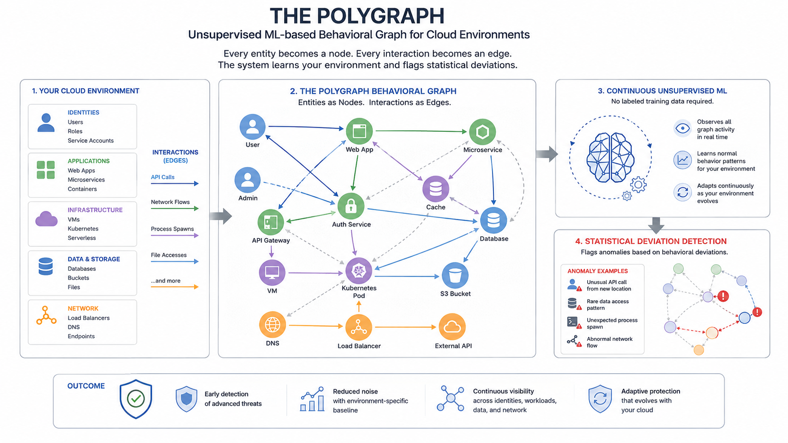
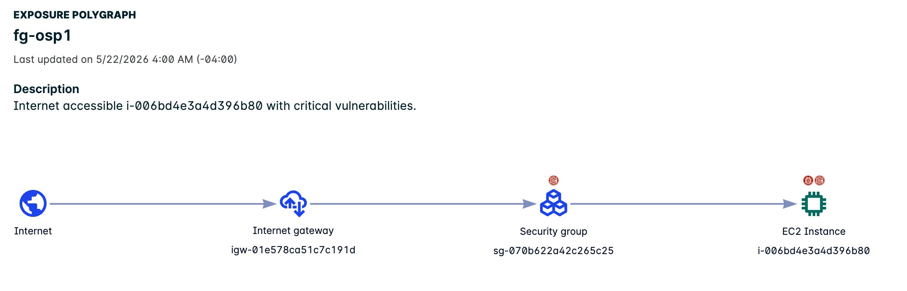

FortiCNAPP - AI-Driven Data
Using Artificial Intelligence to continuously turn cloud log activity into relevant and actionable security insights.
(up to)
(steady state)
(investigation time)
| Description | This article answers 13 common questions about the FortiCNAPP Polygraph — the patented behavioral ML engine that powers threat detection in Fortinet's FortiCNAPP platform. The Polygraph detects unknown cloud threats through deviation from baseline, not signatures or rules. It requires no tuning, no policies, and no predefined detection logic. |
| Scope |
Applies to: FortiCNAPP (all cloud deployments — AWS, Azure, GCP, OCI) Relevant roles: PreSales SE, Security Architect, SOC Analyst, DevSecOps Coverage: Polygraph architecture, 13 analysis groups, baseline mechanics, composite alerts, Kubernetes, container security, Security Fabric integration, and competitive positioning Authoritative source: docs.fortinet.com — FortiCNAPP Polygraph FAQ |
| Solution |
The FortiCNAPP Polygraph is a patented behavioral analysis engine at the core of Fortinet’s FortiCNAPP cloud security platform. It does not rely on signatures, predefined rules, or policies. The name is deliberate. Just as a polygraph measures physiological deviations from baseline, this system measures behavioral deviations from established cloud baselines to detect threats that no signature has ever described. Fortinet describes it as “the first and only zero-touch cloud workload protection platform, which requires no rules, no policies, and no logs for breach detection.” The architecture backs that up. Instead, it observes every entity in your cloud environment and builds a dynamic, graph-based map of normal behavior over time. Polygraph starts learning the moment it deploys. And it does this much faster than traditional security tooling. FortiCNAPP Differentiator
A Forrester Total Economic Impact study found that while conventional tools typically require six to twelve months of tuning, Polygraph establishes a working behavioral baseline in approximately one to two weeks. See the full Q&A below for architecture details, analysis groups table, and Security Fabric integration context. |

The Exposure Polygraph provides an additional layer of risk context to help with investigation. Each instance or container image can have an Exposure Polygraph to provide visual context that shows the path from the internet to the asset. The Exposure Polygraph also illustrates risks such as known vulnerabilities, compliance violations, internet exposure, and discovered secrets. FortiCNAPP bundles all information in a single view to ensure responders can respond quickly and with full context.

The Polygraph represents your cloud environment as a behavioral graph. Every entity becomes a node; every interaction becomes an edge — API calls, network flows, process spawns, file accesses. The system applies unsupervised ML continuously — no labeled training data required. It learns your specific environment and flags statistical deviations.
What makes this powerful is automatic entity grouping. The Polygraph clusters similarly-behaving entities and builds group-level baselines. If one web server starts connecting to cryptomining pools that none of its peers contact, it stands out immediately — not against a generic rule, but against its own peer group's baseline.
A time series analysis layer adds another dimension by tracking how metrics shift over time — CPU spikes, data transfer surges, process spawning frequency. Cryptomining attacks are a prime example of where time series catches what graph analysis alone misses.
The FortiCNAPP Polygraph organises behavioral monitoring into 13 analysis groups, each responsible for monitoring a specific set of behaviors and communication activities. Each group builds its own temporal baseline; together they provide layered, overlapping coverage across the full cloud workload stack. A representative sample is shown below — spanning application, machine, identity, cloud, and host categories.
| # | Group | Category | What It Monitors |
|---|---|---|---|
| — | Application Launch | Application | Which executables spawn which child processes. Detects unusual execution chains — e.g. a web container spawning a shell it has never spawned before. |
| — | Machine Communication | Machine | Network patterns between hosts. Lateral movement appears as new machine-to-machine connections between hosts that have never previously communicated. |
| — | Privilege Changes | Identity | Escalation events, IAM role assumptions, sudo executions, and Kubernetes RBAC modifications. Any privilege change that deviates from established patterns is flagged. |
| — | API Behavior | Cloud | Cloud control plane API call patterns ingested from AWS CloudTrail, GCP Audit Logs, and Azure Activity Logs. Anomalous API call sequences — new services accessed, unusual call volumes, credential use from unexpected locations — are detected against the identity's historical baseline. |
| — | File Integrity | Host | File change detection across host filesystems. Tracks exactly how files change, investigates anomalous activities related to FIM signals, and provides cloud-wide search and file type summaries. New files in unexpected directories are flagged. |
The Polygraph ingests from both cloud control planes and workload-level sensors simultaneously — this dual-layer coverage is the core architectural differentiator.
Cloud control plane (agentless): AWS CloudTrail, Azure Activity Logs, GCP Audit Logs, and Kubernetes Audit Logs. These capture who called what API, from where, and when — critical for detecting compromised credentials and IAM anomalies. Around 25% of data traffic never leaves the VM — so network-only tools miss it; this is why the agent layer exists.
Workload level (agent): The FortiCNAPP Linux host agent uses eBPF (extended Berkeley Packet Filter) to capture process-level telemetry — process spawning, system calls, network connections, privilege escalation events — without kernel modifications. The agent also captures file integrity monitoring (FIM) signals.
The platform also ingests cloud resource inventory, IAM policy data, and security group configurations through agentless API connections. Control plane plus workload — complete visibility without stitching together separate tools.
The Polygraph starts learning the moment it deploys. A Forrester Total Economic Impact study found that while conventional security tools typically require six to twelve months of tuning, the FortiCNAPP Polygraph establishes a working behavioral baseline in approximately one to two weeks.
What keeps baselines accurate over time is update frequency. The Polygraph refreshes baselines hourly for every entity in the environment. That granularity matters in cloud environments where auto-scaling and continuous deployment mean the environment changes constantly. New deployments and auto-scaling events are incorporated automatically — no human tuning required.
Zero-touch means no rules, no policies, no signatures, and no manual tuning. Most security tools require someone to write detection logic: "alert if this process does X." That works for known threats. But cloud environments change too fast for hand-crafted rules to stay current, and novel attacks have no signature to match.
The Polygraph sidesteps that problem entirely. It models what normal looks like for your specific environment and detects novel threats by behavioral deviation — no detection rule required.
The Log4j vulnerability is the canonical example. FortiCNAPP detected anomalous behavior in customer environments related to Log4j before public disclosure of the vulnerability. No signature existed yet. But the unusual process spawning and network communications created a behavioral signal that the Polygraph caught anyway.
Composite Alerts are the Polygraph's answer to alert fatigue. They correlate multiple low-confidence signals from disparate sources into a single, high-confidence alert with full attack context. Instead of firing fifty individual events that an analyst has to manually connect, FortiCNAPP presents one composite alert describing the suspected exploit chain — complete with an Observation Timeline and Intrusion Graph.
The architecture is deliberately opinionated: FortiCNAPP tells you precisely what threat you face and provides all evidence needed to underpin the verdict. Alert volume numbers from documented customer deployments:
- Alert volume reduction: up to 86%
- Steady-state critical alerts: approximately 1.4 per day
- False positive elimination: approximately 95%
- Faster triage: 80% reduction in investigation time
Container environments receive the same behavioral baseline treatment as virtual machines — but with hierarchy awareness. The Polygraph understands natural hierarchies: processes → containers → pods → machines. Container-level deviations are evaluated against the pod and cluster they belong to — a web application container spawning a reverse shell is flagged against its own baseline, not a generic one.
For Kubernetes, FortiCNAPP ingests Kubernetes Audit Logs directly into the Polygraph Data Platform, providing detection of:
- Unauthorised API server access and service account token misuse
- Unauthorised pod creation with elevated privileges
- RBAC permission escalation
- Container escape techniques (e.g.
hostPathvolume mounts targeting/etc/sudoers.d)
Kubernetes Audit Log events are processed in under 15 minutes for near-real-time response. KSPM is also included: CIS Benchmark checks, compliance reporting, and container escape detection all run on the same platform.
The Polygraph is strongest against threats that change behavior without matching known signatures. The primary threat classes:
| Threat | How the Polygraph Detects It |
|---|---|
| Compromised credentials | Stolen cloud IAM credentials create a shifted access pattern — different geolocation, unusual timing, access to unfamiliar services. The Polygraph (API Behavior group) compares against the identity's historical baseline and surfaces the anomaly. |
| Cryptojacking | Multiple converging signals: CPU consumption anomalies (time series layer), unusual child process spawns (Application Launch group), and outbound connections to mining pools (Application Communication group) — all correlating into one composite alert. |
| Lateral movement | New machine-to-machine connection patterns between hosts that have never previously communicated — a direct Machine Communication group baseline deviation. |
| Supply chain attacks | Install-time process execution deviating from baseline — a Node.js process reading credential files and making unexpected outbound calls during npm install are all Process Communication + Application Communication deviations. Day Zero, no CVE required. |
| Data exfiltration | Unusual outbound transfer volumes, new identities accessing sensitive S3 buckets, or mass write-and-encrypt events surface across Machine Communication, API Behavior, and File Integrity groups. |
| Ransomware | Distinctive multi-signal pattern: unusual process activity, abnormal file write patterns (File Integrity group), and mass S3 write-and-encrypt events — joined by the Composite Alert engine. |
Fortinet completed the acquisition of Lacework on August 1, 2024, making FortiCNAPP generally available in October 2024. The deal transferred 225 cloud security and AI patents to Fortinet, expanding the portfolio past 1,800. Lacework is no longer a standalone product — documentation lives at docs.fortinet.com.
What changed for security teams is Security Fabric integration depth:
- FortiSOAR: Automated remediation playbooks — when the Polygraph detects compromised hosts or stolen access keys, FortiSOAR can quarantine instances and revoke credentials automatically
- FortiGate: Network-aware risk scoring — firewall protection status factors into FortiCNAPP workload risk assessments
- FortiGuard Outbreak Alerts: Threat intelligence filtered to your specific environment, not generic feeds
- FortiAnalyzer (with FortiAI-Assist — Agentic AI SOC): All Composite Alerts forwarded as structured SIEM events. FortiAI-Assist provides agentic AI-driven investigation — automatically correlating Polygraph findings, summarising threat context, and recommending remediation steps to accelerate SOC triage
- FortiCNAPP Code Security: Shift-left code scanning (SCA, SAST, IaC, Secrets detection) integrated directly into the FortiCNAPP platform — replaces FortiDevSec (end-of-life). Available across three developer touchpoints:
- VS Code extension — SCA, SAST, and IaC scanning inline in the editor · docs: VS Code
- Cursor IDE extension — same SCA, SAST, and IaC coverage for Cursor (VS Code fork) · docs: IDE extensions
- Claude Code plug-in — available in the Claude Code marketplace; automatically scans IaC and dependency files for security vulnerabilities within your Claude Code workflow; IaC and SCA scanners launch in parallel on the project directory · docs: Claude Code plug-in
- FortiCNAPP DSPM: Data Security Posture Management — added January 2026 — extends Polygraph coverage to sensitive data discovery and classification across cloud datastores
- Unified Risk Manager: Cross-product risk correlation that surfaces FortiCNAPP Polygraph findings alongside network, endpoint, and application risk signals in a single prioritised risk view across the Security Fabric
- FortiWeb | FortiAppSec Cloud: WAF and API security — FortiCNAPP cloud workload runtime signals feed downstream into application-layer enforcement
- FortiCASB / SSPM: SaaS and cloud application security posture — extends FortiCNAPP cloud visibility into SaaS access risk and shadow IT, complementing the Polygraph's workload-layer coverage
The CNAPP market has converged: every major vendor now offers both agentless posture scanning and some form of runtime sensor. The meaningful differentiation is no longer agent vs. agentless — it is the depth, maturity, and ML architecture of the runtime detection layer, and whether enforcement extends beyond the cloud workload into the broader security stack.
| Competitor | Current approach (June 2026) | FortiCNAPP differentiators |
|---|---|---|
| Wiz $32B all-cash · Google/Alphabet Announced Mar 18 2025 · Closed Mar 11 2026 |
Agentless-first via Security Graph (CSPM/CIEM/DSPM/attack paths). Wiz Defend (launched 2024, via Gem Security acquisition) includes an eBPF-based Runtime Sensor for process-level threat detection. The sensor is a separately priced add-on — not included in the base Wiz platform and not deployed by default. Per AWS Marketplace published pricing, the Wiz Sensor is licensed at ~$28,000/year per 100 sensors on top of the Wiz Advanced tier. Customers must explicitly deploy it (single-click for VMs; Helm DaemonSet for Kubernetes). Core Wiz Defend detection still relies primarily on cloud audit log correlation; the sensor adds depth only where deliberately deployed. Google closed the acquisition March 11, 2026 — Wiz operates under Google Cloud but retains its brand and multi-cloud support commitment; AWS/Azure investment parity is an ongoing watch item for enterprise buyers. |
|
| CrowdStrike Falcon Cloud Security | Single Falcon agent spans endpoint EDR, CWPP, and container runtime — no separate cloud sensor to deploy. Strongest for existing Falcon EDR customers. Detection based on adversary Indicators of Attack (IOAs) from 230+ tracked threat groups plus Threat Graph cross-domain correlation. Added Application Explorer (Mar 2026) for app-to-infrastructure visibility. Integrates CSPM, CIEM, CDR, and ASPM in one console. |
|
| Orca Security Acquired Opus (AI remediation) 2025 |
Agentless-first via patented SideScanning (no agent, no network packets). Added an optional eBPF Sensor in July 2025 for hybrid/private cloud runtime protection, including Windows-specific coverage. AI-driven capabilities: Threat Investigation Agent and AppSec Triage Agent launched March 2026. Strong at attack path, reachability analysis, and eliminating CVE noise (90%+ reduction claimed). Broad CSPM/CWPP/CIEM/DSPM/CDR/AI-SPM in one platform. |
|
| Palo Alto Cortex Cloud Rebranded from Prisma Cloud, Feb 2025 |
Most feature-complete CNAPP: CSPM, CWPP (mature Twistlock-lineage Defender agents), CIEM, DSPM, code security (Checkov/Bridgecrew), CDR, and AI-SPM. Rebranded as Cortex Cloud in February 2025, merging Prisma Cloud CNAPP with Cortex XDR CDR into a unified code-to-cloud-to-SOC platform. Dual architecture: agentless posture scanning + Defender agents for runtime enforcement. Credit-based licensing creates procurement complexity. Multi-acquisition history makes console unification an ongoing effort. |
|
So the real difference is no longer about "agent vs no agent." Instead, it's about how detection works:
- Some platforms mainly rely on snapshots or periodic views of systems, with sensors added on top if needed.
- FortiCNAPP's Polygraph focuses on a continuous, always-learning model, building a live behavioral baseline for each workload using unsupervised ML.
The Forrester Total Economic Impact™ study commissioned by Lacework (2022) — conducted prior to the Fortinet acquisition — documented 342% ROI over three years for a composite organisation based on interviews with multiple Lacework customers. Published figures:
- 3-year ROI: 342%
- Total quantified benefits: $2.3M
- Productivity increase: $1.8M
- Net present value (NPV): $1.79M
Additional operational outcomes cited across customer evidence:
- Alert volume reduction: up to 86% — reaching ~1.4 critical alerts per day
- False positive elimination: approximately 95%
- Threat investigation speed: 80% faster due to pre-correlated Composite Alert context
- Baseline established: 1–2 weeks vs. 6–12 months for conventional tooling
Customer evidence: LawnStarter (improved decision context), Nylas (agent + agentless combination enabled Log4j runtime detection before public disclosure), AOK Systems GmbH (healthcare data protection), Careem (DevSecOps efficiency).
The Polygraph is a detection engine — but within the Fortinet Security Fabric it becomes part of an enforcement chain. Detection alone is not containment. The Security Fabric integration converts Polygraph findings into automated response actions:
| Fabric Component | Integration Role |
|---|---|
| FortiSOAR | Receives Composite Alerts as triggers for automated playbooks. When the Polygraph detects a compromised host or stolen access key, FortiSOAR can quarantine the instance, revoke cloud credentials, and open an IR ticket — without analyst intervention. |
| FortiGate | Network-aware risk scoring — FortiCNAPP factors firewall protection state into workload risk assessment. FortiGate policy enforcement can isolate compromised workload network segments based on FortiCNAPP signals. |
| FortiAnalyzer FortiAI-Assist — Agentic AI SOC |
All Composite Alerts forwarded as structured SIEM events. FortiAI-Assist provides agentic AI-driven SOC investigation — automatically correlating Polygraph findings with broader environment context, generating natural-language threat summaries, and recommending or executing remediation steps. Reduces mean time to respond without requiring manual analyst correlation. |
| FortiGuard Labs | Outbreak Alerts surface FortiGuard threat intelligence filtered to your specific environment. New Polygraph custom threat feeds can be populated with campaign-specific IOCs (e.g. Miasma GCP user-agent string) for targeted detection. |
| FortiCNAPP Code Security VS Code · Cursor · Claude Code |
Shift-left SCA, SAST, IaC, and secrets scanning at the developer touchpoint. Three integrations: VS Code extension, Cursor IDE extension, and Claude Code marketplace plug-in — all surface FortiCNAPP Code Security findings inline before code reaches a repository or pipeline. FortiCNAPP Polygraph covers the runtime layer after deployment; FortiWeb covers the WAF/API protection layer. |
| FortiWeb | FortiAppSec Cloud | WAF and API security protection at the application layer. FortiCNAPP Polygraph runtime signals (anomalous process behaviour, credential abuse, container escape) feed downstream into application-layer enforcement — closing the gap between cloud workload and web application protection. |
| FortiCASB / SSPM | SaaS security posture and cloud access broker — extends FortiCNAPP cloud visibility into SaaS application risk, shadow IT discovery, and misconfigured SaaS permissions. Complements the Polygraph's IaaS/PaaS workload-layer coverage with SaaS-layer posture management. |
Explore self-guided, hands-on walkthroughs of the FortiCNAPP platform — Polygraph, Attack Path Analysis, CSPM, CIEM, DSPM, and Code Security — without needing a live environment.
Explore demosRequest a live, guided FortiCNAPP demo with a Fortinet cloud security specialist — tailored to your cloud environment (AWS, Azure, GCP, OCI), threat model, and compliance requirements.
Request a demo- docs.fortinet.com — FortiCNAPP Polygraph FAQ (authoritative)
- docs.fortinet.com — Composite Alerts Reference
- docs.fortinet.com — FortiCNAPP: Install on Kubernetes
- docs.fortinet.com — FortiCNAPP Polygraph FAQ (versioned)
- Security Scientist — Lacework Polygraph Explained: Behavioral Cloud Security (March 2026) — original 12-question format this Technical Tip is based on; updated to 13 questions with FortiCNAPP branding and docs.fortinet.com authoritative references
- Fortinet Community — FortiCNAPP Knowledge Base